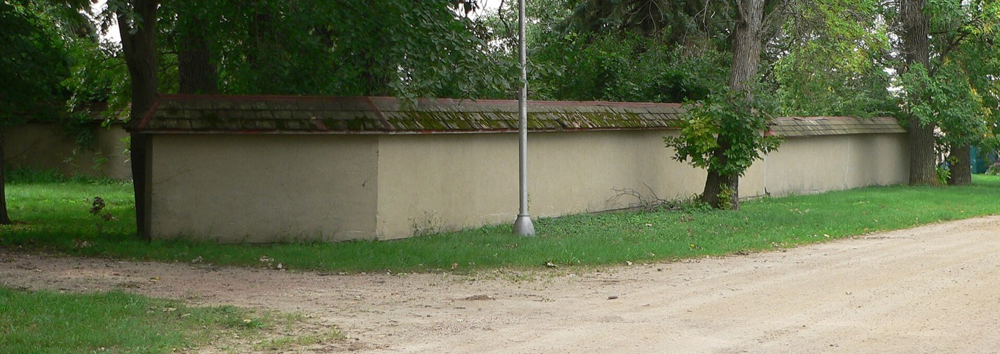

Alternative Building Methods in 2026
From 3D-printed concrete to earthbag domes and bamboo, the building methods gaining ground in 2026, what each costs, and which ones make sense in the tropics. A builder's honest breakdown.

For a century, "building a house" meant one of two things: a wood stick-frame (North America) or concrete block and rebar (most of the tropics). In 2026 that monopoly is cracking. A wave of alternative building methods, some ancient, some straight out of a robotics lab, is gaining real ground, pushed by three forces at once: the affordability crisis, the demand for lower-carbon building, and a hunger for homes that survive earthquakes, hurricanes, and fire. This guide is a builder's honest map of the field: what each method is, what it costs, its green/yellow/red trade-offs, and, the question most guides skip, whether it works in a hot, wet, seismic place like Panama or Costa Rica.
At a glance
- Most "cheap" alternative methods are not cheap once you pay someone to build them. The savings live in owner labour, not in the material.
- Shipping containers are the most expensive method on this page per square foot, at $150 to $350, and only make financial sense below about 600 sq ft.
- Prefab and modular is the one reliably cheaper route, at $80 to $160 per square foot fully installed.
- Earthbag is cheapest only if you supply the labour. One real builder comparison put a finished earthbag shell at about $42,000 against $36,000 for the identical stick-frame plan.
- For the tropics, ICF is the strongest performer and bamboo the most interesting local option. Both are covered in depth on their own pages.
- Watch for wall-only pricing. Many published figures cover the wall system alone, which is the single biggest reason people underestimate these builds.
Why alternative methods are booming right now
Three currents are converging. First, affordability: with conventional construction pricing more people out, cheaper-to-build methods (earthbag, container, prefab) get a serious second look. Second, sustainability: earth, bamboo, and hemp store carbon or need almost none to produce, while 3D printing slashes material waste. Third, resilience: superadobe domes shrug off earthquakes, ICF walls take hurricane-force wind, and concrete doesn't burn. The most interesting 2026 trend is the fusion of the two extremes, labs are now literally 3D-printing adobe, marrying a 10,000-year-old material to digital fabrication.
Every method, side by side
Here's the whole field on one screen: what each method roughly costs, how it copes with heat and rain, and what it's good for. Skim it, find the one that fits your budget and your stomach for risk, then click through.
| Method | Rough cost | Tropical fit | Best for |
|---|---|---|---|
| Prefab & modular | $$ | 🟢 Good | Speed + predictable quality |
| Shipping container | $$ | 🟡 Mixed | Small, modern, fast |
| 3D-printed | $–$$ | 🟢 Good | Frontier / low-waste concrete |
| ICF (concrete forms) | $$$ | 🟢 Excellent | Storm + seismic + cool interiors |
| SIPs (panels) | $$$ | 🟡 Careful | Energy efficiency, fast shell |
| Bamboo & guadua | $ | 🟢 Native | Sustainable, local, beautiful |
| Earthbag / superadobe / hyperadobe | $ | 🟡 With care | Ultra-low-cost, DIY, seismic domes |
| Rammed earth | $$$ | 🟡 | Thermal mass, beauty |
| Adobe | $ | 🟡 | Traditional earthen |
| Cob | $ | 🟡 | Sculptural, DIY natural |
| Hempcrete | $$$ | 🟡 | Carbon-negative insulation |
| Earthship | $$ | 🟡 | Off-grid, self-sufficient |
| Barndominium | $$ | 🔴 Hot shell | Big, cheap, open-plan |
| Tiny homes | $ | 🟢 Good | Casita, first build, low cost |
| Manufactured & mobile | $ | 🟡 Import | Cheapest per sq ft (if available) |
| A-frame | $$ | 🟢 Sheds rain | Cabins, rentals, wet climates |
| Mass timber / CLT | $$$ | 🔴 Early | Low-carbon mid-rise (not yet homes here) |
What each method actually costs
The table above uses dollar signs because relative cost is what you want when skimming. Here are the real numbers. All figures are US national ranges for a finished, code-compliant home, not a bare shell, and they exclude land.
| Method | Cost / sq ft | 1,500 sq ft build | Cheaper than conventional? |
|---|---|---|---|
| Prefab & modular | $80–160 | $120,000–240,000 | Yes, reliably |
| Earthbag / superadobe | $20–35 owner-built $80–150 contracted | $30,000–100,000+ | Only if you build it yourself |
| Bamboo & guadua | $40–90 in Latin America | $60,000–135,000 | Yes, where it grows locally |
| Cob | $60–150 | $90,000–225,000 | Only owner-built |
| Straw bale | $100 rural to $350 in costly markets | $150,000–525,000 | Location-dependent |
| Rammed earth | $50–225 | $75,000–340,000 | Rarely; it is labour-intensive |
| SIPs | $180–280 | $270,000–420,000 | No, but energy costs drop |
| ICF | $200–420 | $300,000–630,000 | No, 10–20% above wood frame |
| Shipping container | $150–350 custom $250–400+ | $225,000–525,000 | No, and rarely |
| Conventional stick-frame | $175–350 | $260,000–525,000 | The baseline |
| Conventional block, tropics | $80–140 in Panama | $120,000–210,000 | The local baseline |
Why the cheap methods are not cheap
This is the thing the field gets wrong, and it is worth understanding before you fall in love with a method.
Earthbag, cob, straw bale and rammed earth are all cheap in materials and expensive in hours. Earth is nearly free; tamping it into walls is not. When an owner-builder reports $25 per square foot, they are usually pricing material and valuing their own labour at zero. Hire a crew to do the same work and the number lands in ordinary construction territory, sometimes above it, because the crew is doing something unfamiliar and slowly.
One real comparison makes the point better than any average: a builder pricing identical plans found the finished earthbag shell came in near $42,000 against about $36,000 for stick-frame, with straw bale at roughly $39,000. The supposedly cheapest method was the most expensive of the three.
The wall-only trap
Most published costs for natural building methods price the wall system alone. A wall is perhaps 15% to 20% of a finished house. Foundations, roof, windows, doors, plumbing, wiring, fixtures, permits and finishes are the rest, and they cost the same regardless of what your walls are made of.
So a headline of "$7 to $16 per square foot" for earthbag is not a lie, it is just answering a different question than the one you are asking. When you compare methods, confirm every figure is for a finished, permitted, habitable house. If a source does not say, assume it is walls.
The container home myth
Shipping container homes carry a reputation for being the budget option, and the data does not support it. At $150 to $350 per square foot, rising to $250 to $400+ for custom designs, containers sit at or above conventional construction.
The reasons are structural. A container is a strong box designed to be stacked, but cutting openings into it removes exactly the strength that makes it work, so cut sections need steel reinforcement added back. Steel conducts heat aggressively, so insulation is not optional and adds $0.80 to $4.50 per square foot. And the fixed 8-foot width dictates the architecture rather than serving it.
Where containers do win is small. Under about 600 square feet the prefabricated box saves time and money. Above roughly 1,200 square feet you are joining multiple containers, adding steel, and paying more than you would have for a conventional building of the same size. If the appeal is the aesthetic, that is a completely legitimate reason to choose one. Just do not choose it expecting to save money.

The modern & buildable methods
These are the ones a foreign buyer can most realistically use for a permanent home today, and the ones closest to what a professional builder can deliver with a warranty:
- Prefab & modular, built in a factory, assembled on site. Fast and consistent.
- Shipping containers, cheap steel boxes, great for small modern builds, tricky in tropical heat.
- 3D-printed concrete, the frontier; low-waste, fast shells, few printers in-region yet.
- ICF, insulated concrete forms; the best all-rounder for the tropics.
- SIPs, structural insulated panels; superb efficiency, needs moisture/termite discipline in the humid tropics.
The natural & earth methods
Ancient, low-carbon, often DIY-friendly, and having a genuine renaissance:
- Bamboo & guadua, the "steel of the 21st century," native to Latin America; treatment is everything.
- Earthbag, superadobe & hyperadobe, soil in bags or mesh tubes; the cheapest resilient shell there is, and the method Nader Khalili's superadobe → Fernando Pacheco's hyperadobe made famous.
- Adobe & rammed earth, earthen walls with huge thermal mass; cob, hand-sculpted earth; hempcrete, carbon-negative insulation; straw bale, super-insulated ag-waste walls; and earthships, radically self-sufficient off-grid homes.
How to choose, a quick decision path
Sort by your hard constraint first:
- Lowest possible cost / DIY → earthbag/superadobe or cob.
- Speed + a warranty → prefab/modular or a pro-built concrete method (ICF).
- Hurricane + earthquake country → ICF or superadobe domes.
- Greenest footprint → bamboo, hempcrete, or earth.
- Hot climate, want a cool interior without huge AC bills → ICF or high-thermal-mass earth.
- Permitting must be easy → conventional concrete or prefab (codes lag on earthen methods).
Head-to-head comparisons
Deciding between two methods? These side-by-side breakdowns settle the most common matchups:
- ICF vs SIP, insulated concrete vs insulated wood panels (and why the tropics favor one).
- Prefab vs shipping container, purpose-built modular vs repurposed steel boxes.
- Cement vs concrete, the difference everyone gets wrong, explained.
- Concrete vs wood house, the fundamental structural choice, and why the tropics favor one.
- Modular vs manufactured, both factory-built, but treated differently.
- Container vs tiny home, two routes to a small, affordable dwelling.
Where SORA sits on all this
SORA builds in reinforced concrete block and rebar by default, because in the tropics it is the proven, financeable, warrantable, insurable, and permit-friendly choice, it handles heat, humidity, termites, hurricanes, and earthquakes without drama. But the future is hybrid: ICF and 3D-printed concrete are natural extensions of that concrete expertise, and bamboo/guadua is a sustainable option we can design around. The honest builder's take running through every page here: the exotic method that looks amazing on YouTube is often the wrong call for a permanent tropical home, and knowing exactly when it is the right call is the whole point. For the honest long view on where all this is heading, read whether a large, sound, beautiful home could ever cost $40,000 to build.
The method matters less than the builder.
Every method on this page has been built beautifully and built badly. What separates the two is almost never the material, it is whether the crew has done it before. SORA builds fixed-price homes in Panama and Costa Rica, mostly in reinforced concrete and ICF because that is what the local trade does well, and we will tell you plainly when a method you like is a bad fit for your site or your budget.
See real 2026 build costs →Sources & how to read cost claims
Verified 12 August 2026. Cost ranges are US national figures for finished homes unless marked otherwise; Panama figures come from our own project data.
- Cost-per-square-foot ranges cross-checked across independent construction cost aggregators, with owner-built and contracted figures separated rather than blended.
- Container home economics, including the sub-600 sq ft threshold and the insulation surcharge, from 2026 container-build cost data.
- The earthbag versus stick-frame comparison comes from a builder pricing identical plans, not from an index.
A note on why these ranges are so wide. Alternative methods have small sample sizes, and much of the published pricing comes from advocates of a particular method. We have kept ranges wide rather than quoting a midpoint that would look precise and mislead you. 3D-printed housing is the least reliable category of all, because the built sample is still tiny and most quoted figures describe printed walls rather than finished houses. Treat any single number for it with suspicion, including ours.
Frequently asked questions
What is the cheapest alternative building method?
Earthbag / superadobe is the cheapest resilient method, the primary material is soil, so if you provide the labor, the shell can cost a fraction of conventional construction. Cob and adobe are similarly low-material-cost. The limitation is labor intensity and, in wet climates, the need for excellent moisture protection.
Which alternative building method is best for a hot, humid, seismic climate like Panama or Costa Rica?
For a permanent, financeable home, ICF (insulated concrete forms) is the strongest all-rounder, concrete strength for hurricanes and earthquakes, plus built-in insulation that keeps interiors cool. Reinforced concrete block (the regional standard) and 3D-printed concrete are close behind. Bamboo/guadua is the best truly-sustainable option but requires proper treatment against insects and rot.
Are alternative building methods harder to permit and finance?
Often, yes. Building codes and banks are built around conventional methods, so earthen and experimental methods (earthbag, cob, hempcrete, some 3D printing) can face permitting hurdles and be hard to mortgage or insure. Concrete-based methods (ICF, 3D-printed concrete) and prefab/modular usually permit and finance much more easily.
Sources & verification
Figures in this guide were checked against primary and authoritative sources on 27 July 2026. Immigration, tax, and cost figures change — always confirm the current rules with the official body or a licensed professional before acting.
- Natural Building Blog — earthbag / superadobe resilience
- CleanTech Group — 3D-printed homes investment trend 2026
- Build With Rise — earthbag architecture overview